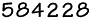

|
Back
to Demos Explained
|
These web pages archived
from http://www.oldskool.org/demos/explained/
on October 17th 2000 in compliance with the statement "If you would like
to use this website as a historical reference of the PC demoscene or a
starting point for your own pages, feel free to do so as long as you give
me (Trixter) credit somewhere." found on the home page. For the most part
these web pages are outdated, most of the links are not functional. They are
provided for the content which is found specifically on the pages.
|
![[Glossary]](up_gloss.gif)
![[History]](up_hist.gif)
![[Effects]](up_effec.gif)
![[Music]](up_music.gif)
![[HowToCode]](up_howto.gif)
![[People]](up_peop.gif)
![[Places]](up_place.gif)
![[Events]](up_event.gif)
![[Misc.]](up_misc.gif)
Final Update!
A Guide to the PC Demo Scene
Provided as a service to the demo scene by Trixter / Hornet.
Prefer German? Malte Clasen (The Update / CoPro) has been kind enough to
translate these pages into a German
version.
This page has been accessed by users  times
since it was created on September 3rd, 1994.
Also listed in Tekno Magazine, nr.
1 - 1997
Final update: 9/21/98.
This website is no longer being maintained. The
information on this website was current as of 1996, so most of the external
links beyond this point have expired.
If you would like to use this
website as a historical reference of the PC demoscene or a starting point for
your own pages, feel free to do so as long as you give me (Trixter) credit
somewhere.
Welcome to the first home page where people can learn about demos,
the demoscene, and get a definition of
terms. You can also get sound clips
of demo music styles, pictures
of cool demo effects, and more. (For starters, a Glossary of
terms is available.)
As always, if there's anything here that you feel I've left out or needs to
be clarified, please email trixter@mcs.com
to have your suggestion implemented as quickly as possible.
For best
viewing, a graphical browser is recommended.
This section's contents: (Use the buttons above to switch sections)
Note to demo-freaks: Here's a quick list of the
cool hot-links in these pages that you might miss if you're not careful:
What is a Demo?
A demo is a program
that displays a sound, music, and light show, usually in 3D. Demos are very fun
to watch, because they seemingly do things that aren't possible on the machine
they were programmed on.
Essentially, demos "show off". They do so in usually one, two, or all three
of three methods:
- They show off the computer's hardware abilities (3D objects, multi-channel
sound, etc.)
- They show off the creative abilities of the demo group (artists,
musicians)
- They show off the programmer's abilities (fast 3D shaded polygons, complex
motion, etc.)
Demos are an art form. They blend mathematics,
programming skill, and creativity into something incredible to watch and listen
to.
Grant Smith puts it another way:
Jonny looks around, confused, his train of thought disrupted. He
collects himself, and stares at the teacher with a steady eye. "I want
to code demos," he says, his words becoming stronger and more confidant
as he speaks. "I want to write something that will change people's
perception of reality. I want them to walk away from the computer dazed,
unsure of their footing and eyesight. I want to write something that
will reach out of the screen and grab them, making heartbeats and
breathing slow to almost a halt. I want to write something that, when it
is finished, they are reluctant to leave, knowing that nothing they
experience that day will be quite as real, as insightful, as good. I
want to write demos."
Silence. The class and the teacher stare at Jonny, stunned. It
is the teachers turn to be confused. Jonny blushes, feeling that
something more is required. "Either that or I want to be a fireman."
- Grant Smith,
14:32,
11/21/93
Frequently asked Questions
Houman and Trixter have prepared a FAQ on
demos, in case you want quickie answers to your most common questions. An electronic version
exists, as well as a hyper-text version.
How to get Demos
FTP sites
Well-known sites
These anonymous FTP sites are the best places to get demos and demo-related
information.
- ftp://ftp.hornet.org/pub/demos: Home
base for the demogroup Hornet--an extremely diverse site offering music,
graphics, magazines, programming info/source code, etc. A one-stop-shop--and
highly recommended. If you have to visit only one site, make it this
one (or, if you're not in North America, visit one of its mirrors, ftp://ftp.luth.se/pub/msdos/demos
in Sweden, or ftp://ftp.uni-paderborn.de/pub/pc-demos
in Germany).
- Sam's list of demo
FTP sites
- ftp://ftp.arosnet.se/demo, a
server set up and maintained by Zodiak / Cascada. You might have to use an
actual FTP program to connect properly to this site.
- hagar.arts.kuleuven.ac.be
Lesser-known sites
Lazy? Don't know what to get? Use Trixter's MobyList.
Other Demo-Related Pages
Other demo related WWW
pages exist, as well as pictures of your
favorite demo people.
And, of course, press those
buttons at the top of the page to visit the different sections of this site.
Back to
Hornet's home page.
Comments or Suggestions on these WWW pages? Email Trixter.
WWW counter provided by http://www.digits.com/